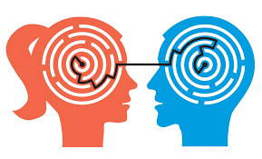

La innovación es muy importante en estos días debido a los grandes cambios en nuestra sociedad, lo que afecta
a los negocios, los servicios y los productos en un mundo globalizado y altamente competitivo.
Ser innovador es cambiar en nuestra forma de pensar y actuar, es buscar siempre como lograr mejores resultados, menores costos, productos o servicios que sean mejores que la competencia.
Ser innovador es hacer las cosas diferente, modificar lo existente o crear cosas nuevas. Ser innovador hoy en día es una ventaja competitiva.
Características que debe desarrollar un profesional
La autogestión
Capacidad de controlar tu comportamiento, pensamientos y emociones de una manera productiva. Esto significa
destacarte en el cumplimiento de responsabilidades
Comunicación asertiva
Habilidad que permite expresar ideas, sentimientos y opiniones de manera clara y directa,
sin agredir ni ser pasivo.

Adaptación
La capacidad de transformarse para alcanzar un objetivo o solucionar problemas. Es una habilidad que implica
modificar la conducta para responder a los cambios del entorno
Resolucion de problemas
Capacidad de identificar y resolver un problema o conflicto, mediante un proceso que incluye:
Definir el problema, Identificar la causa del problema, Priorizar y seleccionar alternativas de solución, Implementar la solución,
Supervisar y evaluar la implementación de la solución.
Disciplina
La disciplina es un hábito que cada persona genera con base a su compromiso y autocontrol sumando también el comportamiento
y personalidad que tenga cada uno, ya que como individuos planificamos, definimos nuestros objetivos y metas y así mismo diseñamos el paso a paso
para poder lograrlos, sin disciplina no se llega a nada.